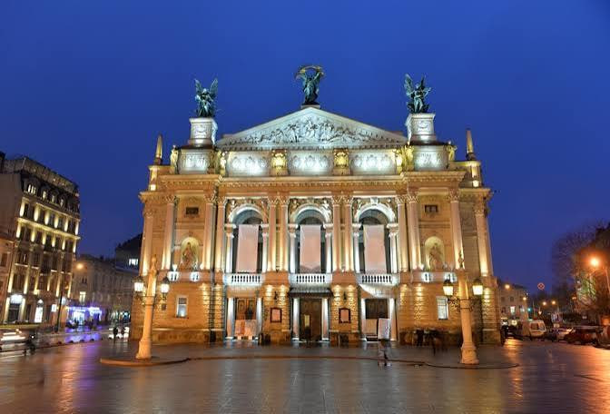

Народився 12.07.2007 в м. Полтава
Навчаюся в Київському політехнічному інституті ім. Ігоря Сікорського.
Навчався в Полтавській загальноосвітній школі №29
Одне з моїх улюблених міст — Львів. Мені подобається його старовинна архітектура, затишні кав'ярні та атмосфера старого міста.
